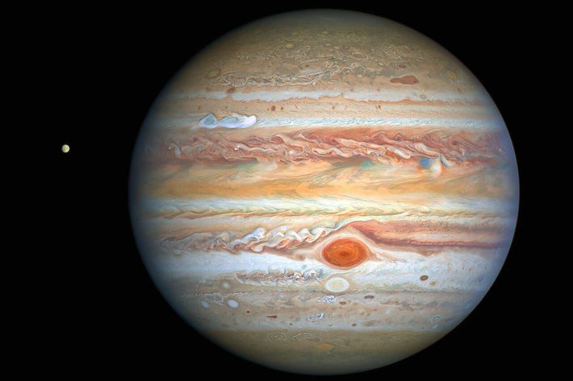
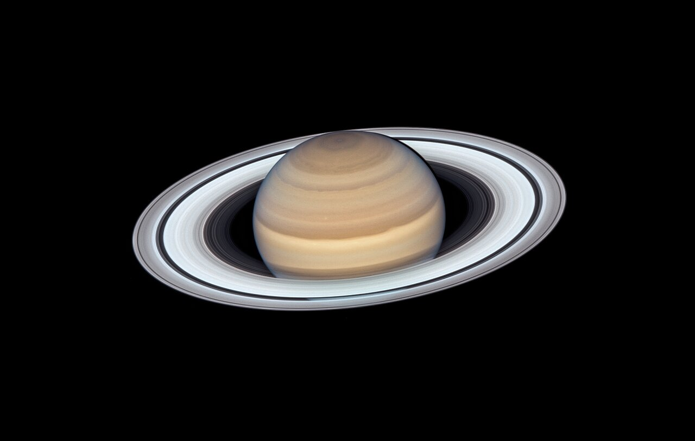
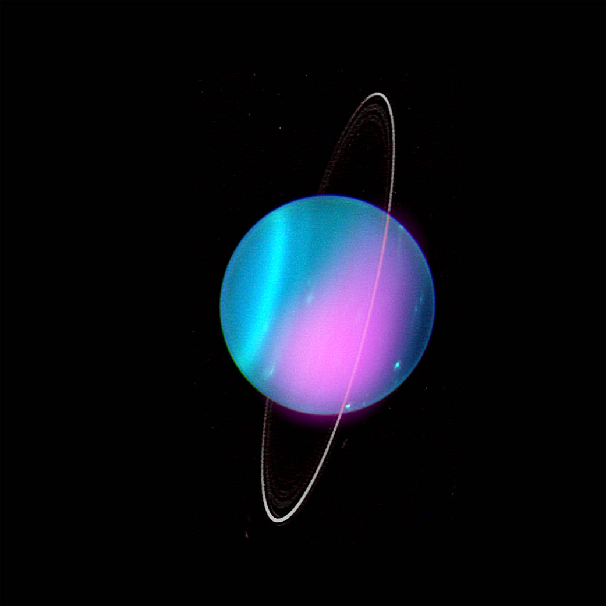
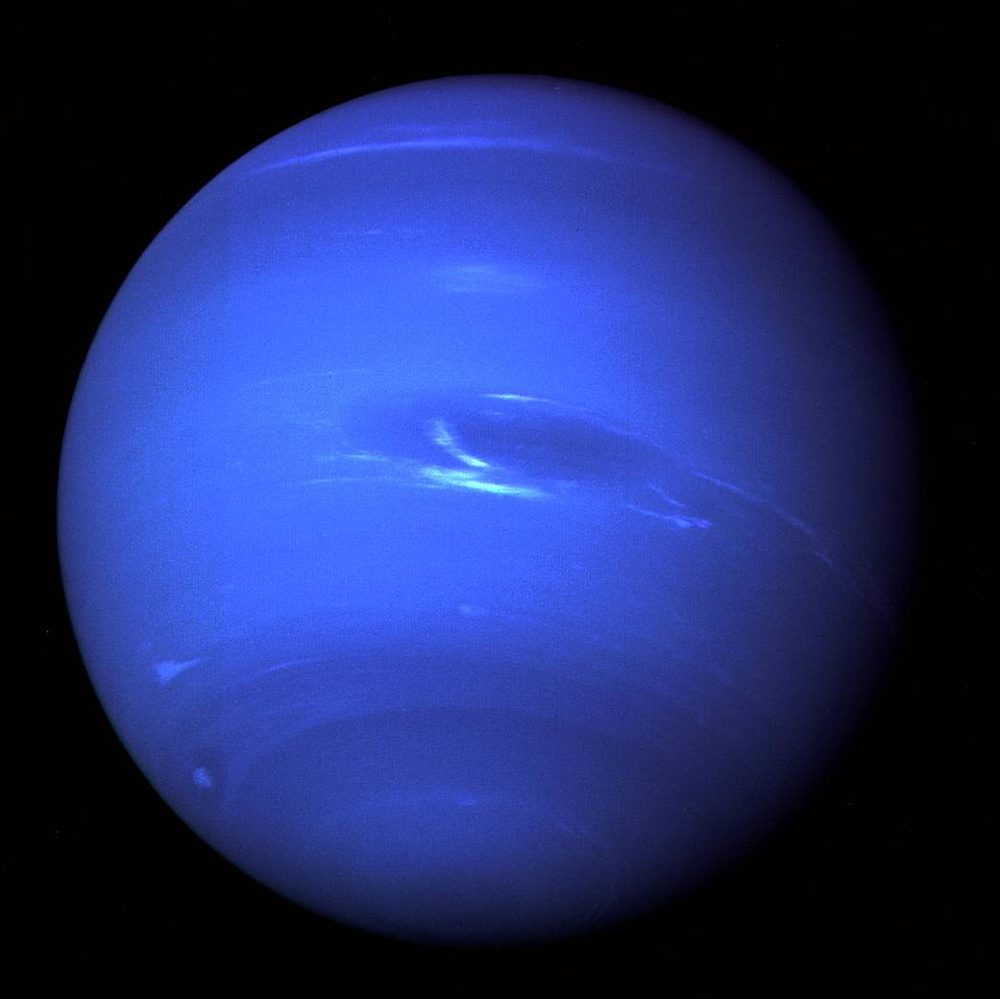

The Jovian Gas Giants

All information sourced from The Planets
What Is A Gas Giant
Gas giants are, as the name says, gas giants. While planets like the Earth are small, dense, and are constructed from heavy, rocky, mineral-rich materials, gas giants are a mainly gaseous composition, such as hydrogen and helium. While they do contain some rocky material, it is only found at the planet core.
However, a planet can be a gas giant without primarily being gas (in few instances). While hydrogen and helium make up about 90% of both Jupiter and Saturn, Uranus and Neptune are only made up of about 20%, and are instead made up mostly of ices, which led to the different classification of ice giants. Despite this, Uranus and Neptune are still commonly called gas giants alongside Jupiter and Saturn.
Gas Giants (and sometimes Ice Giants) differ from other planets in that they can contain rings, and typically have large amounts of moons.
The Outer Solar System
The Jovian Gas Giants, or the gas giants in our solar system, get their name from Jupiter, and are seperated from the Terrestrial Planets by the Main Asteroid Belt, and are the furthest planets from our Sun.
Gas Giants are billions of years old, and we have never been able to see the direct formation of one yet. However, we have theories on how they came to form. Roughly 4.6 billion years ago a solar nebula occured, creating a cloud composed of dust and gas that eventually gave birth to the Sun. The remainder swirled around the Sun's gravitational pull. While terrestrial planets had gaseous edges, they were burned away by intense solar radiation. The Jovian Gas Giants, however, were far enough away from the Sun to maintain their gaseous edges, and allowed these balls of gas and ice to maintain how they were billions of years ago.
The Gas Giants Of Our Solar System Are:
- Jupiter
- Saturn
- Uranus
- Neptune
- Honorable Mention: Pluto
Jupiter
Jupiter is the 5th planet from the Sun, and the largest planetary member of our solar system, fittingly named after the Roman god Jupiter, equivalent to Greek Mythology's Zeus, the king of the gods. As a gas giant composed mostly of hydrogen, Jupiter does not have a solid surface.
After the Earth Moon and Venus, Jupiter is the third brightest object we can observe in the night sky, while still being roughly 5.2 astronomical units away from the Sun. Jupiter is so large, that if we were to combine all other planets in the solar system into one planet, Jupiter would still be more than twice the size of that planet.

A year on Jupiter is nearly 12 years longer than an Earthern Year, and yet its rotation period is much shorter, taking only 9 hours and 55 minutes to rotate, making it the fastest spinning planet in the solar system.
Jupiter has four known rings, made mostly of dust. The composition of these rings make them hard to see, as they do not reflect light. Jupiter also has 79 known moons, with only 53 of them named. The largest of these moons are Io, Europa, Ganymede, and Callisto, known as the Galilean moons.
Jupiter's most identifying feature, The Great Red Spot, is actually a big storm in the southern part of Jupiter. While being much stronger than any storm we have experienced here on Earth, it is also more than twice the size of Earth. The storm is theorized to have been going on since before 1665.
Saturn
Saturn is the second-largest planet in our solar system, and is the 6th planet from the Sun.
Saturn is roughly 9.6 astronomical units away from the Sun, and is most famouly known as "The Ringed Planet" due to its bright and magnificent rings. The rings are made up of mostly ice and rock. While Saturn has 7 major rings, other rings are being observed, and some have even started to form around Saturn's moons.

Like other planets, Saturn has storms. In Saturn's southern hemisphere, there is a giant thundercloud known as The Dragon Storm. Radio emissions are produced when the storm is on the night side and end when facing sunlight. Saturn has its own *aurora borealis*, or Northern Lights, just like Earth. However, since Saturn's atmosphere is mainly made up of hydrogen, the lights produced can only be seen in ultraviolet light.
Saturn's orbital period is about 29.5 Earth years, and a single planet rotation takes about 10 and a half hours.
Saturn has claim to 82 moons, only 53 of which are named, and also contains several small natural satellites (moonlets) in its rings. The largest moon is Titan, which is also the second-largest in the solar system after Jupiter's Ganymede. Titan is unique in that it is the only natural satellite that has a substantial atmosphere, having lakes and rivers just like Earth.
Uranus
Uranus, unlike other planets, rotates on its side and, along with Venus, moves from east to west. The seventh planet from the Sun, Uranus has a long orbital period of 84 years, yet has a day period of about 17 hours.
Uranus is a very cold and windy world. Made up mostly of "ices" and other hydrocarbons, it has the third-largest diameter among the planets in our solar system.

Like other gas giants, Uranus is surrounde by rings. Featuring 13 mainly opaque rings, they are designated using the Greek alphabet system.
Uranus has 27 confirmed moons, being grouped into three sections:
- 5 Major Moons
- 13 Inner Moons
- 9 Regular Moons
Neptune
Neptune is the eighth planet from the Sun, roughly 30 astronomical units away. It was named after the god of the sea in Roman mythology, who's Greek equivalent is Poseidon.
Neptune is the only planet that we cannot see with the naked eye. It had a different means of discovery, being done through mathematical prediction instead of empirical observation.
The presence of methane accounts for the deep blue appearance of this planet, earning it the nickname "Blue Planet". Neptune is the densest of all the giant planets. A Neptunian day is only about 16 hours long, yet has one of the longest orbital periods in our solar system, of 165 Earthen years.

Fourteen moons have been observed around Neptune, and were named after minor water deities in Greek mythology. The largest natural satellite of Neptune, Triton, is the only large moon with a retrograde orbit.
Neptune has at least five rings, known as Galle, Leverrier, Lassell, Arago, and Adams.
Pluto
While Pluto is now known as a dwarf planet, for a long time in its history it was grouped in with the Jovian Gas Giants.
While there is debate over whether Pluto would have been classified as a gas giant or a terrestrial planet, as it exhibits both icey and rocky behavior, its far out location in the solar system meant for years it was grouped in with the likes of Neptune and Uranus, and was hailed as the ninth planet from the Sun.

While Pluto is smaller than many planetary moons, and is known as a dwarf planet, Pluto itself has five known moons, named Charon, Styx, Nix, Kerberos, and Hydra.
Return to Home Page